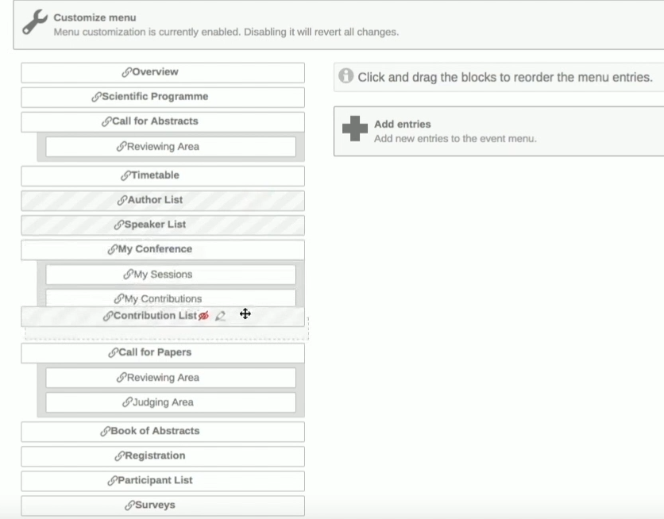
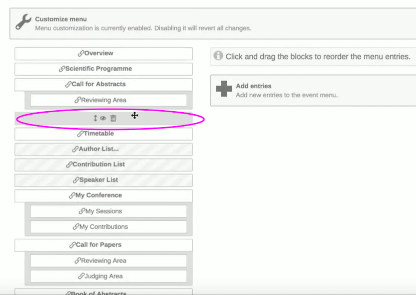
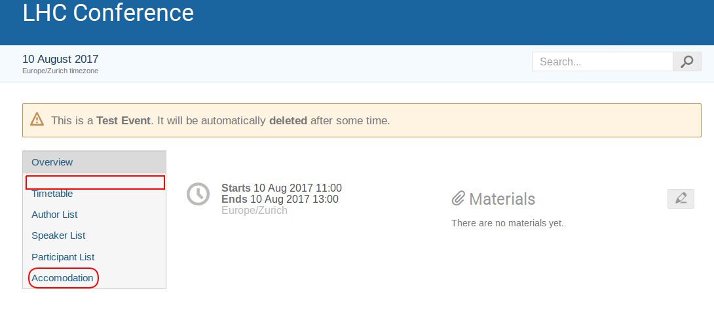

Customizing the Conference Menu
You can customise the appearance of your indico menus, by clicking on Menu, under the tab Customisation, while on management mode.
Select Yes on the right so that you can start customising the menus on your pages.
Click on the eye icon to show or stop showing a particular block. Then you can drag and drop the block to change their order and you can click on the pencil to edit the titles of the menu blocks.

To add another block to your Menus you can click on Add an entry, then either on Add link, or Add page. For example, you can add a page entitled “Accommodation” where you will show some photos of hotels, where participants of the conference can stay, and so on. You can also select the option Add spacer that will separate two blocks.

Click on Switch to display view to see the changes to your menu that you just made.
